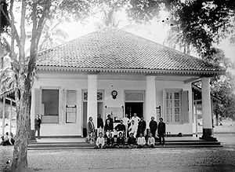
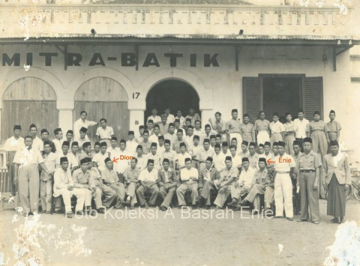
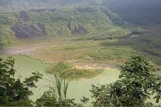
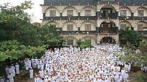
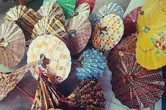
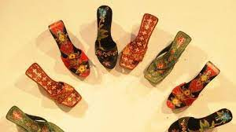
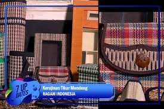
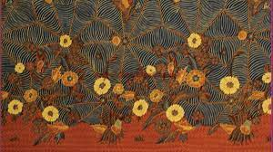

SEJARAH KOTA TASIKMALAYA

Sejarah Kota Tasikmalaya Dimulai pada abad ke VII sampai abad ke XII di wilayah yang sekarang dikenal sebagai Kabupaten Tasikmalaya, diketahui adanya suatu bentuk Pemerintahan Kebataraan dengan pusat pemerintahannya di sekitar Galunggung, dengan kekuasaan mengabisheka raja-raja (dari Kerajaan Galuh) atau dengan kata lain raja baru dianggap syah bila mendapat persetujuan Batara yang bertahta di Galunggung. Batara atau sesepuh yang memerintah pada masa abad tersebut adalah sang Batara Semplakwaja, Batara Kuncung Putih, Batara Kawindu, Batara Wastuhayu, dan Batari Hyang yang pada masa pemerintahannya mengalami perubahan bentuk dari kebataraan menjadi kerajaan. Kerajaan ini bernama Kerajaan Galunggung yang berdiri pada tanggal 13 Bhadrapada 1033 Saka atau 21 Agustus 1111 dengan penguasa pertamanya yaitu Batari Hyang, berdasarkan Prasasti Geger Hanjuang yang ditemukan di bukit Geger Hanjuang, Desa Linggawangi, Kecamatan Leuwisari, Tasikmalaya. Dari Sang Batari inilah mengemuka ajarannya yang dikenal sebagai Sang Hyang Siksakandang Karesian. Ajarannya ini masih dijadikan ajaran resmi pada jaman Prabu Siliwangi (1482-1521 M) yang bertahta di Pakuan Pajajaran. Kerajaan Galunggung ini bertahan sampai 6 raja berikutnya yang masih keturunan Batari Hyang. 2 Periode selanjutnya adalah periode pemerintahan di Sukakerta dengan Ibukota di Dayeuh Tengah (sekarang termasuk dalam Kecamatan Salopa, Tasikmalaya), yang merupakan salah satu daerah bawahan dari Kerajaan Pajajaran. Penguasa pertama adalah Sri Gading Anteg yang masa hidupnya sejaman dengan Prabu Siliwangi. Dalem Sukakerta sebagai penerus tahta diperkirakan sejaman dengan Prabu Surawisesa (1521-1535 M) Raja Pajajaran yang menggantikan Prabu Siliwangi. Pada masa pemerintahan Prabu Surawisesa kedudukan Pajajaran sudah mulai terdesak oleh gerakan kerajaan Islam yang dipelopori oleh Cirebon dan Demak. Sunan Gunung Jati sejak tahun 1528 berkeliling ke seluruh wilayah tanah Sunda untuk mengajarkan Agama Islam. Ketika Pajajaran mulai lemah, daerahdaerah kekuasaannya terutama yang terletak di bagian timur berusaha melepaskan diri. Mungkin sekali Dalem Sukakerta atau Dalem Sentawoan sudah menjadi penguasa Sukakerta yang merdeka, lepas dari Pajajaran. Tidak mustahil pula kedua penguasa itu sudah masuk Islam. Periode selanjutnya adalah pemerintahan di Sukapura yang didahului oleh masa pergolakan di wilayah Priangan yang berlangsung lebih kurang 10 tahun. Munculnya pergolakan ini sebagai akibat persaingan tiga kekuatan besar di Pulau Jawa pada awal abad XVII Masehi: Mataram, banten, dan VOC yang berkedudukan di Batavia. Wirawangsa sebagai penguasa Sukakerta kemudian diangkat menjadi Bupati daerah Sukapura, dengan gelar Wiradadaha I, sebagai hadiah dari Sultan Agung Mataram atas jasa-jasanya membasmi pemberontakan 3 Dipati Ukur. Ibukota negeri yang awalnya di Dayeuh Tengah, kemudian dipindah ke Leuwiloa Sukaraja dan “negara” disebut “Sukapura”. Pada masa pemerintahan R.T. Surialaga (1813-1814) ibukota Kabupaten Sukapura dipindahkan ke Tasikmalaya. Kemudian pada masa pemerintahan Wiradadaha VIII ibukota dipindahkan ke Manonjaya (1832). Perpindahan ibukota ini dengan alasan untuk memperkuat benteng-benteng pertahanan Belanda dalam menghadapi Diponegoro. Pada tanggal 1 Oktober 1901 ibukota Sukapura dipindahkan kembali ke Tasikmalaya. Latar belakang pemindahan ini cenderung berrdasarkan alasan ekonomis bagi kepentingan Belanda. Pada waktu itu daerah Galunggung yang subur menjadi penghasil kopi dan nila. Sebelum diekspor melalui Batavia terlebih dahulu dikumpulkan di suatu tempat, biasanya di ibukota daerah. Letak Manonjaya kurang memenuhi untuk dijadikan tempat pengumpulan hasil-hasil perkebunan yang ada di Galunggung. Nama Kabupaten Sukapura pada tahun 1913 diganti namanya menjadi Kabupaten Tasikmalaya dengan R.A.A Wiratanuningrat (1908-1937) sebagai Bupatinya. Tanggal 21 Agustus 1111 Masehi dijadikan Hari Jadi Tasikmalaya berdasarkan Prasasti Geger Hanjuang yang dibuat sebagai tanda upacara pentasbihan atau penobatan Batari Hyang sebagai Penguasa di Galunggung.
SEJARAH PEMERINTAHAN KOTA TASIKMALAYA

Sejarah berdirinya Kota Tasikmalaya sebagai daerah otonomi tidak terlepas dari sejarah berdirinya kabupaten Tasikmalaya sebagai daerah kabupaten induknya. Maka rangkaian sejarah ini merupakan bagian dari rangakaian 4 perjalanan Pemerintah Kabupaten Tasikmalaya sampai terbentuknya Pemerintah Kota Tasikmalaya. Pada waktu A. Bunyamin menjabat sebagai Bupati Tasikmalaya tahun 1976 sampai dengan 1981 tonggak sejarah lahirnya kota Tasikmalaya dimulai denngan diresmikannya Kota Administratif Tasikmalaya melalui peraturan Pemerintah Nomor 22 Tahun 1976 oleh Menteri Dalam Negeri H. Amir Machmud. Periwtiwa ini di tandai dengan penandatangan Prasasti yang sekarang terletak di depan gedung DPRD Kabupaten Tasikmalaya. Pada waktu yang sama dilantik pula Walikota Administratif Pertama yaitu Drs. H. Oman Roosman oleh Gubernur KDH Tingkat I Jawa Barat H. Aang Kunaefi. Pada awal pembentukannya, wilayah kota Administratif Tasikmalaya meliputi 3 Kecamatan yaitu Cipedes, Cihideung dan Tawang dengan jumlah desa sebanyak 13 desa. Pada tanggal 18 Oktober 2001 pelantikan Drs. H. Wahyu Suradiharja sebagai PJ Walikota Tasikmalaya oleh Gubernur Jawa Barat dilaksanakan di Gedung Sate Bandung. Sesusai Undang-Undang No. 10 Tahun 2001 bahwa wilayah Kota Tasikmalaya terdiri dari 8 Kecamatan dengan jumlah Kelurahan sebanyak 15 dan Desa sebanyak 54, tetapi dalam perjalanannya melalui Perda No. 30 Tahun 2003 tentang perubahan status Desa menjadi Kelurahan, desa-desa dilingkungan Pemerintah Kota Tasikmalaya berubah statusnya menjadi Kelurahan, oleh karena itu maka jumlah kelurahan menjadi sebanyak 69 kelurahan, Pada perkembangan selanjutnya, kecamatan di Kota Tasikmalaya 5 bertambah dua menjadi sepuluh kecamatan. Kesepuluh kecamatan tersebut adalah: 1. Kecamatan Tawang 2. Kecamatan Cihideung 3. Kecamatan Cipedes 4. Kecamatan Indihiang 5. Kecamatan Kawalu 6. Kecamatan Cibeureum 7. Kecamatan Mangkubumi 8. Kecamatan Tamansari 9. Kecamatan Bungursari 10. Kecamatan Purbaratu Sebagai salah satu syarat Pemerintah Daerah Otonom diperlukan alat kelengkapan lainnya berupa Lembaga Dewan Perwakilan Rakyat Daerah. Melalui surat keputusan No. 133 Tahun 2001 Tanggal 13 Desember 2001 Komisi Pemilihan Umum membentuk Panitia Pengisian Keanggotaan Dewan Perwakilan Rakyat KotaTasikmalaya (PPK-DPRD). Melalui proses dan tahapan-tahapan yang dilaksanakan PPK-DPRD Kota Tasikmalaya yang cukup panjang, maka pengangkatan anggota DPRD Kota Tasikmalaya disyahkan melalui Keputusan Gubernur Jawa Barat No. 171/Kep.380/Dekon/2002 Tanggal 26 April 2002, selanjutnya tanggal 30 April 2002 diresmikannya keanggotaan DPRD Kota Tasikmalaya yang tetama kali. 6 Kemudian, pada tanggal 14 Nopember 2002 dilakukan pemilihan Walikota dan Wakil Walikota Tasikmalaya definitif yaitu Drs. H. Bubun Bunyamin sebagai Walikota dan Drs. H. Syarif Hidayat, M.Si sebagai Wakil Walikota Tasikmalaya untuk masa jabatan 2002 - 2007. Pelantikan tersebut merupakan sebuah puncak momentum dari pemilihan Kepala Daerah pertama di Kota Tasikmalaya sebagai hasil dari Tahapan proses pemilihan yang dilaksanakan oleh Legislatif. Saat pimpinan Pemerintah Kota Tasikmalaya telah berganti , Pada tanggal 9 September 2007, untuk pertama kalinya warga Kota Tasikmalaya menggunakan hak pilihnya dalam Pilkada Walikota dan Wakil Walikota Tasikmalaya, pemenang Pilkada saat itu yakni pasangan Drs. Syarif Hidayat. M.Si sebagai Walikota & Ir. H. Dede Sudrajat, MP sebagai Wakil Walikota Tasikmalaya yang dilantik pada tanggal 14 Nopember 2007, untuk masa jabatan 2007 – 2012.
GUNUNG GALUNGGUNG
Sebagai warga Jawa Barat pasti pernah mendengar kata Gunung Galunggung. Yang teringat selain sebagai icon pariwisata Tasikmalaya gunung ini juga dikenal karena letusannya yang cukup dahsyat pada tahun 1982. Namun demikian apakah sebagai warga Jawa Barat khususnya warga Tasikmalaya tahu dengan sejarah Gunung Galunggung ini. Mari kita bahas tentang sejarah gunung ini. Gunung Galunggung merupakan gunung berapi dengan ketinggian 2.167 meter di atas permukaan laut. Terletak sekitar 17 km dari pusat kota Tasikmalaya. Selain meletus tahun 1982 Gunung Galunggung juga tercatat pernah meletus pada sekitar Tahun 1822. Letusan ini tercatat menewaskan 4.011 jiwa masyarakat terdekat ke lokasi Gunung tersebut. Selain itu, menghancurkan 114 Wilayah Desa, dengan kerusakan lahan ke arah timur dan selatan sejauh 40 km dari puncak gunung. Pada tahun 1987 lokasi Wisata Alam mulai dibuka. Ditawarkan sebagai alternatif baru berwisata di kawasan Tasikmalaya, Tepatnya di Desa Linggajati Kecamatan Sukaratu. Dikelola atas Kerjasama Pihak Dinas Pariwisata dan Budaya, yang bekerjasama dengan pihak Perhutani Kabupaten Tasikmalaya. Terdapat beberapa daya tarik wisata yang ditawarkan. Antara lain objek wisata berupa Pemandian Air Panas alamiah plus Lokasi Wisata Kolam Renang Air panas. Juga daya tarik wanawisata dengan areal seluas kurang lebih 120 hektar di bawah pengelolaan Perum Perhutani. Menurut misteri, asal usul, Mitos Sejarah Gunung galunggung dimulai pada abad ke XII. Di kawasan ini terdapat suatu Rajamandala (kerajaan bawahan) Galunggung yang berpusat di Rumantak, yang sekarang masuk dalam wilayah Desa Linggawangi, Kecamatan Leuwisari, Tasikmalaya. Tempat Sejarah Gunung Galunggung merupakan salah satu pusat spiritual kerajaan Sunda pra Pajajaran, dengan tokoh pimpinannya Batari Hyang pada abad ke-XII. Saat pengaruh Islam menguat, pusat tersebut pindah ke daerah Pamijahan dengan Syekh Abdul Muhyi (abad ke XVII) sebagai tokoh ulama panutan. Sumber prasasti Geger Hanjuang yang ditemukan di sana menyebutkan bahwa pada tahun 1033 Saka atau 1111 Masehi, Batari Hyang membuat susuk/ parit pertahanan. Peristiwa nyusuk atau pembuatan parit ini berarti menandai adanya penobatan kekuasaan baru di sana (di wilayah Galunggung). Sementara naskah Sunda kuno lain adalah Amanat Galunggung yang merupakan kumpulan naskah yang ditemukan di kabuyutan Ciburuy, Garut Selatan berisi petuah–petuah yang disampaikan oleh Rakyan Darmasiksa, penguasaGalunggung pada masa itu kepada anaknya. Sementara Prabu Jaya Pakuan alias Bujangga Manik, seorang resi Hindu dari Kerajaan Sunda, Pakuan Pajajaran yang telah melakukan dua kali perjalanan dari Pakuan Pajajaran ke Jawa sempat menuliskan Galunggung dalam catatan perjalanannya.
KOTA TASIKMALAYA DIJULUKI SEBAGAI KOTA SANTRI

Salah satu ciri khas dari Kota Tasikmalaya yakni Kota yang melahirkan banyak santri-santri terbaik di Indonesia dari wilayah bagian Jawa Barat ini. Bahkan era sebelum 1980-an, Kota Tasikmalaya memiliki pondok pesantren yang banyak dan tersebar mulai dari yang sudah punya nama hingga masih yang masih baru namun punya kualitas terbaik. Dikenal dengan sebutan Kota Santri, di Kota Tasikmalaya juga terlahir salah satu tokoh perjuangan yang lahir dari kota ini yaitu Zainal Mustafa. Berdasarkan data dari Open Data Jawa Barat pada tahun 2023, di Kota Tasikmalaya terdapat 1.587 Pondok Pesantren yang tersebar di wilayah tersebut. Sebagaimana dirangkum dari Instagram @kominfo_pemkot_tsm, jumlah tersebut meliputi 1.344 pondok pesantren di Kabupaten Tasikmalaya. Sementara itu, di Kota Tasikmalaya berjumlah sebanyak 243 pondok pesantren yang tersebar di wilayah tersebut. Meskipun tingkat kriminalitas di Kota ini naik 10 persen, Kota ini nampaknya masih layak dijuluki sebagai Kota Santri karena beberapa hal. Seperti misalnya moral dan budi pekerti yang diajarkan melalui pondok pesantren di Tasikmalaya. Banyaknya pondok pesantren di Tasikmalaya, membuat kepribadian masyarakat di wilayah tersebut menjadi lebih beragam. Adapun yang diajarkan di tiap pondok pesantren tidak hanya soal agama islam secara menyeluruh. Tetapi mengajarkan nilai kebersamaan disiplin dan tanggung jawab. Oleh karena itu, keberadaan pondok pesantren di Tasikmalaya menunjukan jika nilai budaya Islam g ysangat kental dan mendalam. Ditambah peran pendidikan agama maupun tata krama yang diajarkan dalam pondok pesantren di Tasikmalaya. Demikian penjelasan singkat mengenai asal usul Kota Tasikmalaya yang dijuluki sebagai Kota Santri.
PAYUNG GEULIS

Kerajinan yang juga menjadi ciri khas Tasikmalaya yaitu Payung Geulis. Sentra payung geulis berada di Kelurahan Panyingkiran, Kecamatan Indihiang, Kota Tasikmalaya. Payung geulis, pertama kali di buat oleh Muhi, warga Panyingkiran sekitar tahun 1930-an. Payung Geulis dibuat dengan menggunakan bahan sederhana. Rangkanya terbuat dari bambu. Kemudian, rangka dipasang kain atau kertas khusus dan ujung payung dirapikan menggunakan kanji. Agar lebih cantik alias geulis, payung dihiasi berbagai sentuhan warna warni bergambar motif bunga atau motif alam. Hebatnya lagi, emua proses pembuatan payung geulis dibuat secara manual dengan buatan tangan atau handmade, kecuali gagang payung yang dibuat dengan menggunakan mesin.
KELOM GEULIS

Selain payung geulis, Kelom geulis juga menjadi kerajinan tangan khas Tasikmalaya. Kelom merupakan sandal yang terbuat dari kayu yang dapat digunakan oleh pria dan wanita. Sandal yang berbahan kayu tersebut, biasanya memiliki hak dibagian belakang. Sabut sebagai pengikat kelom biasanya menggunakan kulit hewan. Agar lebih cantik dan enak dipandang, pada kelom geulis diberi pahatan bermotif bunga atau alam. Selanjutnya pahatan dilukis dengan beraneka warna sehingga terlihat lebih geulis. Sentra Kelom Geulis berada di wilayah Gobras, Kecamatan Tamansari Kota Tasikmalaya.
KERAJINAN MENDONG

Kerajinan lainnya yakni Kerajinan mendong yang ada di Kelurahan Singkup, Kecamatan Purbaratu, Kota Tasikmalaya. Bahkan, kerajinan mendong ini sudah rutin dikirim setiap bulan ke mancanegara seperti Eropa, Amerika Serikat dan negara-negara di Asia Timur, yakni Jepang dan Korea Selatan. Kerajinan mendong yang dikirim ke beberapa negara itu berbagai jenis. Antara lain handicrafts furnishing & hospitality, sandal, placemat, tray, tissue box, decotarive box, dust bin, dan produk furnitur.
BATIK

Batik tasikmalaya memiliki tiga jenis motif batik yang populer yaitu Batik Sukapura, Batik Sawoan, dan Batik Tasik. Anda akan dapat membedakan secara sepintas bahwa Batik Sukapura memiliki kemiripan dengan batik madura yang memiliki kontras warna juga ukuran motifnya, sedangkan batik sawoan merupakan salah satu jenis batik yang didominasi warna coklat tua seperti pada buah sawo yang dikombinasikan warna indigo dengan ornamen dasar warna putih, sangat mirip dengan batik solo dan batik cirebon. Untuk batik tasikmalaya sendiri memiliki ciri khas penggunaan warna yang cerah karena pengaruh oleh batik pesisiran. Motif batik tasikmalaya mempunyai tiga motif batik populer yaitu motif batik burung, motif batik payung, dan motif batik kacang panjang yang sangat kental dengan nuansa kota parahyangan. Beberapa motif pengembangan dari batik tasikmalaya yang lain seperti batik bunga anggrek dengan isen-isen burung, motif batik merak ngibing, motif batik cala culu, motif batik pisang bali, motif batik sapu jagat, dan motif batik awi ngarambat juga ada beberapa motif turunannya yang bermotif seperti akar, balimbing, antanan, guci latar batu, lancah tasik, rereng daun peuteuy papangkah, sente, tsunami udey, merak, gunung kawi, lamban samping, kadaka, lancah sawat ungu, renfiel, rereng orlet, rereng sintung, manuk latar sisik, manuk rereng peutey selong, merak latar haremis, sidomukti payung, taleus sukaraja, sisit naga, dan turih-wajit-Limar. Batik tasikmalaya tidak seperti batik jawa pada umumnya yang memiliki filosofi luhur pada setiap motifnya, namun batik tasikmalaya hanya memberikan pesan bahwa kita harus bersinergi dengan alam untuk menjaga kelestariannya. Setiap motif batik tasikmalaya dapat kita gunakan menjadi model baju batik modern dengan memadukan antara kontemporer dan kekinian yang dapat kita lihat pada beberapa pagelaran busana akhir-akhir ini pada even Jakarta fashion week.
Profile
Nama : Annisa Nuraeni
NIM : 10123193
Kelas : IF - 5
Contact